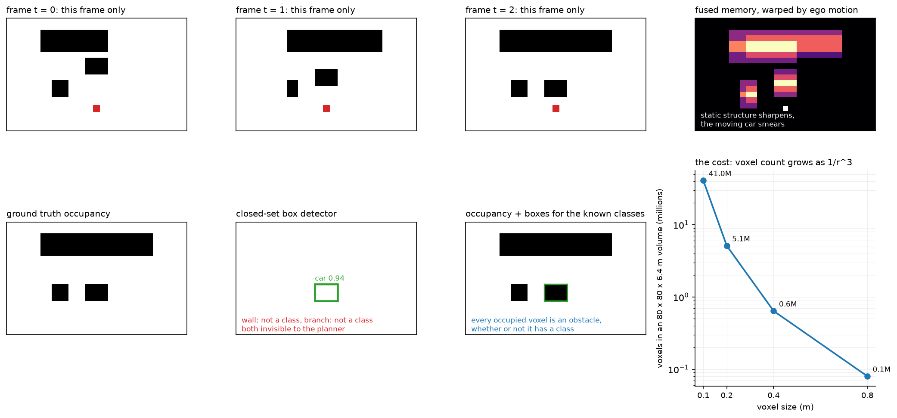

Occupancy and temporal perception¶
Why this matters at staff level. Occupancy is the field's answer to the question every AV interview eventually reaches: what does the car do about an obstacle whose class is not in your taxonomy? A candidate who answers "add the class" has not understood the problem. A candidate who can explain why a class-free geometric representation handles the long tail, quantify what it costs in voxels and memory, and describe how the belief is maintained across time while the ego moves, is answering at the level the role requires.
TL;DR, the interview card¶
- Boxes assume the world is made of known, rigid, box-shaped, enumerable categories. A fallen branch, a mattress, a partially deployed airbag, a flooded dip and an articulated truck bending through a turn all violate one of those assumptions.
- Occupancy estimates \(p(o_{xyz} \mid x_{1:t})\) over a voxel grid: is this volume occupied, and optionally by what class and moving how. An unoccupied class is still an obstacle, so the planner never needs the name.
- The cost is cubic. An \(80 \times 80 \times 6.4\) m volume at 0.4 m voxels is 5.1M voxels; at 0.2 m it is 41M. Halving the voxel size multiplies memory and compute by 8.
- Cheap 3D head: FlashOcc-style channel-to-height reshapes a 2D conv's \(K \cdot Z\) output channels into \((K, Z)\) per BEV cell, giving a 3D output from 2D convolutions.
- Temporal fusion: the belief from \(t-1\) lives in the previous ego frame, so warp it with \(T_{\text{curr} \leftarrow \text{prev}}\) before fusing. Static structure accumulates, moving objects smear, and previously-observed-now-occluded space is remembered.
- Supervision comes from accumulated LiDAR with occlusion reasoning (Occ3D's pipeline: voxel densification, occlusion reasoning, image-guided refinement), or from differentiable rendering, where you supervise the depth a NeRF-style volume render produces instead of the voxels themselves.
- Occupancy and boxes coexist in every real stack. Boxes give identity, velocity and behaviour prediction for the classes you care about; occupancy gives "do not drive there" for everything else.
1. Intuition first¶
A box detector is a function from sensor data to a list of (class, position, extent, heading). Every element of that output type carries an assumption. The class comes from a fixed set. The extent is a cuboid. The heading assumes a rigid body with a canonical orientation. The list assumes you can enumerate the obstacles.
Now consider the objects that break these. A mattress on the motorway has no class in your taxonomy and no meaningful heading. A tree branch is not a cuboid, and a cuboid around it either includes drivable space you would then avoid or excludes branch you would then hit. An articulated bus mid-turn is two cuboids with a joint. A cloud of dust is occupied for a LiDAR and drivable for a planner. A pothole is unoccupied and still something to avoid.
Occupancy sidesteps all of it by changing the output type. Instead of a list of objects, produce a scalar field over space: for each voxel, the probability that it is occupied. Optionally add a semantic label and a flow vector. A planner consumes the field directly, because what a planner needs to know is whether a volume it wants to pass through is free.

The top row shows three frames of partial evidence (a wall is occluded on one side at \(t=0\) and on the other at \(t=1\)) and the fused, ego-motion-warped memory on the right, where static structure has sharpened and the moving vehicle has left a trail. The bottom row is the comparison: the box detector fires on the vehicle it has a class for and leaves the wall and the branch entirely unrepresented, so a planner consuming only boxes sees free space where there is a wall. The rightmost panel is the cost, and it is the reason occupancy is a systems problem and not only a modelling one.
Work a small example. A \(6 \times 6\) BEV grid at 1 m, with 4 height levels. Suppose at time \(t\) the model believes cell \((3, 2)\) at height level 1 is occupied with probability 0.9, and cell \((3, 3)\) is behind it and therefore unobserved, probability 0.5 (the prior). The ego drives 1 m forward. At \(t+1\) the belief about the world has not changed, but the indexing has: what was at \(x = 3.5\) m is now at \(x = 2.5\) m, so the 0.9 must move to cell \((2, 2)\). Fuse without warping and you have placed a wall one metre further away than it is.
2. The math¶
2.1 The estimation problem¶
The quantity is a posterior over the occupancy of each voxel given all observations:
Classical occupancy grid mapping assumes voxels are independent given the sensor model and updates each in log-odds:
which is the same rule as sensor fusion in the previous chapter, applied per voxel and per measurement. This is exact for a known sensor model and independent voxels, and both assumptions are wrong: LiDAR returns are correlated through surfaces, and neighbouring voxels are strongly dependent because objects are contiguous.
Learned occupancy replaces the hand-written sensor model with a network that maps sensor observations to voxel logits directly, and replaces the independence assumption with whatever the network's receptive field captures. What it keeps from the classical formulation is the recursive structure: a belief carried forward, updated by new evidence.
2.2 The channel-to-height head¶
A full 3D convolutional decoder over \(X \times Y \times Z\) voxels is expensive. FlashOcc's observation is that you can produce the 3D output from a 2D backbone. Let the BEV feature be \(B \in \mathbb{R}^{C \times X \times Y}\). Apply a \(1 \times 1\) convolution to \(K \cdot Z\) output channels and reshape:
Each BEV cell's channel vector is reinterpreted as \(Z\) height slices of \(K\) class logits. The network never performs a 3D convolution, so the cost is that of a 2D network with a wide final layer. What you give up is 3D spatial mixing: a voxel's prediction cannot directly consult its vertical neighbours except through whatever the BEV features already encode. For driving, where the vertical structure is simple (ground, object, free air), this trades well; for a general 3D reconstruction task it would not.
2.3 The class-imbalance problem¶
The occupancy distribution is dominated by free space. In a typical driving scene, 90% or more of the voxels within the grid are empty, and among occupied voxels the distribution over classes is itself long-tailed (road surface and buildings dominate; pedestrians and cyclists are a fraction of a percent).
Plain cross-entropy therefore has a trivial solution worth naming: predict free everywhere. That achieves 90% voxel accuracy and zero utility. Two standard corrections:
with \(f_k\) the class frequency, and a Lovasz-softmax or soft-IoU term that optimises the overlap metric directly instead of per-voxel likelihood. Evaluation uses IoU rather than accuracy for the same reason:
where \(\hat O\) is the set of predicted non-free voxels. Reporting both is standard: binary IoU measures "did you find the obstacles", mIoU measures "did you name them", and a model can be good at the first and poor at the second, which for a planner is an acceptable trade.
2.4 Visibility and what "free" means¶
A voxel can be free, occupied, or unobserved, and collapsing the third into the first is a safety bug. A region behind a parked van has never been measured; predicting it free because no LiDAR return came from it means a planner treats an occluded pedestrian's location as drivable.
Occ3D's label pipeline handles this explicitly with three stages: voxel densification (accumulate LiDAR across the sequence, using tracked object poses so dynamic objects accumulate in their own frames), occlusion reasoning (ray-cast from each sensor pose to mark which voxels were actually observed), and image-guided voxel refinement. The resulting labels carry a visibility mask, and evaluation ignores unobserved voxels rather than scoring predictions against labels that were themselves guesses.
In deployment the same three-state distinction drives behaviour. The planner's response to occupied is "do not enter"; to unobserved it is "do not enter at a speed from which you could not stop", which is how a competent human drives past a line of parked cars.
2.5 Temporal fusion by ego-motion warping¶
The belief at \(t-1\) is expressed in the ego frame at \(t-1\). Warp it into the current frame before fusing, exactly as in chapter 2:
with bilinear sampling and zeros outside the extent. For planar motion every height slice warps identically, so a 2D warp of the BEV feature suffices.
Then a gated update, which is a GRU without the reset gate:
The gate is what makes this work on a world containing both static and dynamic content. Where the warped memory and the new evidence agree (static structure, correctly warped), the gate can take any value and the output is the same, so the gradient is uninformative and the value does not matter. Where they disagree (a moving object, or newly visible space), the gate opens and the new evidence wins. Where there is no new evidence (now-occluded space), the gate closes and the memory persists.
The fixed point is worth checking. With \(g\) constant and evidence constant, \(h\) converges to \(f(x)\) regardless of \(g\), so the memory cannot latch on stale content indefinitely as long as evidence keeps arriving. With no evidence, \(h\) holds. Both are the behaviours you want.
What temporal fusion buys, concretely. Occlusion memory: a pedestrian who steps behind a van remains in the belief. Evidence accumulation: a weak return at 60 m that is below threshold in one frame clears it after four. Velocity: the displacement of a feature between the warped memory and the current evidence is the object's motion in the ego frame. And temporal consistency: a planner receiving a belief that flickers between occupied and free produces jerky behaviour, and the memory smooths it.
What it costs. Memory latching: if the ego-motion estimate is wrong, static structure smears and the model learns to distrust the memory, quietly removing the benefit. Error propagation: a false positive enters the memory and persists for as long as the gate keeps it, so a single bad frame can produce a phantom obstacle lasting seconds. Both are why production systems bound the memory's influence, with a decay term or a maximum age.
2.6 Flow and future occupancy¶
Static occupancy tells the planner where it cannot go now. A planner reasoning about three seconds ahead needs where it cannot go then. Two ways to provide it.
Occupancy flow. Predict, per voxel, a displacement \(\Delta p_v\) over the horizon, so the future occupancy is the current occupancy advected by the flow. This handles rigid and non-rigid motion uniformly and needs no object identity, and it degrades gracefully because a wrong flow on a static voxel is a small error.
Direct future occupancy. Predict \(p(o_{xyz}^{t+\delta})\) for several \(\delta\) as extra output channels. Simple, and it blurs: since the future is multimodal (the vehicle may turn left or right), a model trained with per-voxel cross-entropy predicts the marginal occupancy, which is a smear covering both options. That smear is honest, and it is also useless for a planner trying to find a gap, because the marginal occupies the space between the modes that no actual future occupies. Chapter 6 treats this as the central problem of prediction.
2.7 Rendering-based supervision, as literacy¶
Getting voxel labels requires LiDAR and a label pipeline. An alternative supervises in image space and lets the 3D representation be implicit. Give each voxel a density \(\sigma_v\) and integrate along a camera ray, as in NeRF:
where \(T_i\) is the transmittance up to sample \(i\) and \(\delta_i\) the step length. Supervise \(\hat d\) against measured depth, or the rendered colour against the image. Because the render is differentiable in \(\sigma\), gradients reach the occupancy field without any voxel label, which is the basis of self-supervised occupancy from images alone: render depth from one camera's predicted field and supervise it with the photometric consistency of a neighbouring view or a neighbouring time step.
3D Gaussian splatting replaces the voxel grid with anisotropic Gaussians and the ray integral with a rasterisation of projected Gaussians, which is much faster to render and represents surfaces more compactly. For perception the appeal is the same: a differentiable renderer converts image-space supervision into 3D geometry supervision.
3. Implementation¶
The head reshapes channels into height:
class OccupancyHead(nn.Module):
"""BEV features (B, C, X, Y) → voxel logits (B, K, Z, X, Y)."""
def __init__(self, c_in: int, num_classes: int, num_z: int):
super().__init__()
self.k, self.z = num_classes, num_z
self.conv = nn.Sequential(
nn.Conv2d(c_in, c_in, kernel_size=3, padding=1), nn.ReLU(),
nn.Conv2d(c_in, num_classes * num_z, kernel_size=1),
)
def forward(self, bev: torch.Tensor) -> torch.Tensor:
b, _, nx, ny = bev.shape
logits = self.conv(bev) # (B, K·Z, X, Y)
return logits.view(b, self.k, self.z, nx, ny) # (B, K, Z, X, Y) channel → height
The view ordering is the detail to get right. Channels are laid out class-major, so channel
\(k Z + z\) becomes class \(k\) at height \(z\). Reversing it (height-major) still produces a
tensor of the correct shape and trains to a plausible loss, while silently permuting your
height slices; the model compensates by learning a permuted representation, and the bug
surfaces only when you visualise the output or compare against ground truth built the other
way. Assert on a hand-built case.
The temporal fusion is warp then gate:
def forward(self, curr, prev, T_curr_from_prev):
if prev is None:
return curr
prev_aligned = warp_bev(prev, T_curr_from_prev, self.bev_extent) # (B, C, X, Y)
g = torch.sigmoid(self.gate(torch.cat([prev_aligned, curr], dim=1))) # (B, C, X, Y) in (0, 1)
return (1.0 - g) * prev_aligned + g * curr # (B, C, X, Y)
Concatenating both inputs before the gate convolution is what lets the gate be disagreement-driven: with only the current frame as input it could learn a spatial prior ("trust new evidence near the ego"), and with only the memory it could learn a decay, but neither can express "these two disagree here". The output is a convex combination, so activations cannot grow without bound across a long sequence. A recurrent module that runs for the length of a drive would otherwise be one bad frame away from overflow.
The loss and metrics:
def occupancy_loss(logits, target, class_weights=None, ignore_index=255):
"""Per-voxel cross-entropy. logits (B, K, Z, X, Y), target (B, Z, X, Y) long."""
return F.cross_entropy(logits, target, weight=class_weights, ignore_index=ignore_index)
def occupancy_iou(logits, target, free_class=0):
"""(binary occupied-vs-free IoU, per-class IoU (K,))."""
k = logits.shape[1]
pred = logits.argmax(dim=1) # (B, Z, X, Y)
occ_p, occ_t = pred != free_class, target != free_class # (B, Z, X, Y) each
binary = (occ_p & occ_t).sum().float() / (occ_p | occ_t).sum().clamp(min=1).float()
per_class = torch.zeros(k) # (K,)
for c in range(k):
p_c, t_c = pred == c, target == c
per_class[c] = (p_c & t_c).sum().float() / (p_c | t_c).sum().clamp(min=1).float()
return float(binary), per_class
ignore_index=255 is where visibility enters: label unobserved voxels 255 and they
contribute no gradient and no metric. Without it, the model is trained to predict something
definite about space nobody measured, and whatever it predicts there is a guess presented as
a belief.
F.cross_entropy accepts (B, K, d1, d2, d3) against (B, d1, d2, d3) directly, so no
flattening is needed; the class dimension must be dimension 1.
Full implementation
"""3D semantic occupancy head with ego-motion-aligned temporal fusion (PyTorch).
The model estimates ``p(o_{xyz} = k | x_{1:t})`` for every voxel of a grid around the ego,
where ``k`` ranges over {free, semantic classes}. The head here is the cheap
"channel-to-height" design (FlashOcc): a 2D conv on BEV features emits ``K·Z`` channels
that are reshaped to ``(K, Z)`` per cell — no 3D convolutions.
Temporal fusion: the previous belief, expressed in the previous ego frame, is warped into
the current frame with ``warp_bev`` (planar ego motion; every height slice moves the same
way), then blended with the current evidence by a learned gate,
h_t = (1 − g) ⊙ warp(h_{t−1}) + g ⊙ f(x_t), g = σ(W [warp(h_{t−1}); f(x_t)]),
i.e. a GRU-style recursive update whose fixed point is a static map and whose gate opens
where the new frame disagrees with the memory (moving objects, newly visible space).
"""
from __future__ import annotations
import torch
import torch.nn.functional as F
from torch import nn
from mlbook.perception.temporal_bev import warp_bev
class OccupancyHead(nn.Module):
"""BEV features (B, C, X, Y) → voxel logits (B, K, Z, X, Y)."""
def __init__(self, c_in: int, num_classes: int, num_z: int):
super().__init__()
self.k, self.z = num_classes, num_z
self.conv = nn.Sequential(
nn.Conv2d(c_in, c_in, kernel_size=3, padding=1), nn.ReLU(),
nn.Conv2d(c_in, num_classes * num_z, kernel_size=1),
)
def forward(self, bev: torch.Tensor) -> torch.Tensor:
b, _, nx, ny = bev.shape
logits = self.conv(bev) # (B, K·Z, X, Y)
return logits.view(b, self.k, self.z, nx, ny) # (B, K, Z, X, Y) channel → height
class TemporalOccupancyFusion(nn.Module):
"""Gated fusion of the warped previous BEV memory and the current BEV features.
forward(curr (B, C, X, Y), prev (B, C, X, Y) | None, T_curr_from_prev (B, 4, 4)) → (B, C, X, Y).
"""
def __init__(self, c: int, bev_extent: tuple[float, float, float, float]):
super().__init__()
self.bev_extent = bev_extent
self.gate = nn.Conv2d(2 * c, c, kernel_size=3, padding=1)
def forward(self, curr: torch.Tensor, prev: torch.Tensor | None, T_curr_from_prev: torch.Tensor | None) -> torch.Tensor:
if prev is None:
return curr
prev_aligned = warp_bev(prev, T_curr_from_prev, self.bev_extent) # (B, C, X, Y)
g = torch.sigmoid(self.gate(torch.cat([prev_aligned, curr], dim=1))) # (B, C, X, Y) in (0, 1)
return (1.0 - g) * prev_aligned + g * curr # (B, C, X, Y)
def occupancy_loss(logits: torch.Tensor, target: torch.Tensor, class_weights: torch.Tensor | None = None,
ignore_index: int = 255) -> torch.Tensor:
"""Per-voxel cross-entropy. logits (B, K, Z, X, Y), target (B, Z, X, Y) long.
Free space is ~90 % of voxels, so ``class_weights`` (K,) (inverse-frequency) matter.
"""
return F.cross_entropy(logits, target, weight=class_weights, ignore_index=ignore_index)
def occupancy_iou(logits: torch.Tensor, target: torch.Tensor, free_class: int = 0) -> tuple[float, torch.Tensor]:
"""(binary occupied-vs-free IoU, per-class IoU (K,)) — the two numbers Occ3D reports (IoU, mIoU)."""
k = logits.shape[1]
pred = logits.argmax(dim=1) # (B, Z, X, Y)
occ_p, occ_t = pred != free_class, target != free_class # (B, Z, X, Y) each
binary = (occ_p & occ_t).sum().float() / (occ_p | occ_t).sum().clamp(min=1).float()
per_class = torch.zeros(k) # (K,)
for c in range(k):
p_c, t_c = pred == c, target == c
per_class[c] = (p_c & t_c).sum().float() / (p_c | t_c).sum().clamp(min=1).float()
return float(binary), per_class
def voxelize_points(points_ego: torch.Tensor, labels: torch.Tensor, extent: tuple[float, ...],
grid: tuple[int, int, int], free_class: int = 0) -> torch.Tensor:
"""Semantic points (N, 3) + labels (N,) → dense target (Z, X, Y); empty voxels = ``free_class``.
``extent`` = (x_min, x_max, y_min, y_max, z_min, z_max), ``grid`` = (Z, X, Y).
Occupied voxels take the label of the last point that lands in them.
"""
nz, nx, ny = grid
lo = torch.tensor(extent[0::2]) # (3,)
hi = torch.tensor(extent[1::2]) # (3,)
size = torch.tensor([nx, ny, nz], dtype=torch.float32) # (3,) per-axis cell counts, xyz order
idx = torch.floor((points_ego - lo) / (hi - lo) * size).long() # (N, 3)
inside = ((idx >= 0) & (idx < size.long())).all(dim=1) # (N,)
target = torch.full((nz, nx, ny), free_class, dtype=torch.long) # (Z, X, Y)
ix, iy, iz = idx[inside, 0], idx[inside, 1], idx[inside, 2] # (M,) each
target[iz, ix, iy] = labels[inside]
return target
How you would test it. Shapes and gradient flow for the head. For the fusion: the first frame must pass through unchanged, the output must be bounded between the two inputs elementwise (which verifies the convex combination), and with the gate forced closed a memory feature must move by exactly the ego displacement, which is the test that catches a warp sign error. For voxelization: a point at a known metric position must land in a hand-computed voxel and the rest must be free. For the metrics: a perfect prediction must give IoU 1.0 on every class.
Retype by hand¶
| Symbol | File | Target time | Why |
|---|---|---|---|
OccupancyHead |
src/mlbook/perception/occupancy.py |
8 minutes | The channel-to-height trick, including the reshape ordering. |
TemporalOccupancyFusion.forward |
src/mlbook/perception/occupancy.py |
12 minutes | Warp then gate; the concatenation is the design decision. |
voxelize_points |
src/mlbook/perception/occupancy.py |
12 minutes | Metric-to-index arithmetic and the inside mask, easy to get off by one. |
occupancy_iou |
src/mlbook/perception/occupancy.py |
10 minutes | Binary and per-class IoU, the two numbers every occupancy paper reports. |
Read but do not retype: occupancy_loss (one call, but know why ignore_index is there),
and warp_bev from temporal_bev.py, which you already practised in chapter 2 and which
this chapter depends on.
Check yourself with:
Target: 40 minutes with the file green. If you did chapter 2's warp_bev drill, this chapter
adds about 25 minutes of new material.
4. Systems view: cost, failure modes, trade-offs¶
The voxel budget. Voxel count is \((2L/r)^2 \cdot (H/r)\) for range \(L\), height \(H\) and voxel size \(r\). Some reference points for an \(80 \times 80 \times 6.4\) m volume:
| Voxel size | Voxels | Logits at \(K=16\), fp16 | Comment |
|---|---|---|---|
| 0.8 m | 0.64M | 20 MB | Too coarse to represent a pedestrian |
| 0.4 m | 5.1M | 164 MB | The common research setting (Occ3D-nuScenes uses 0.4 m) |
| 0.2 m | 41M | 1.3 GB | Dense storage is already impractical on-vehicle |
| 0.1 m | 328M | 10.5 GB | Only feasible sparsely |
A pedestrian is about \(0.6 \times 0.4 \times 1.7\) m, so at 0.4 m voxels they occupy roughly \(2 \times 1 \times 4 = 8\) voxels, which is enough to detect and not enough to shape precisely. At 0.8 m they may occupy 1 to 2 voxels and are indistinguishable from a post.
Sparsity is the way out. Over 90% of voxels are free and most of the rest are on a thin surface. Sparse convolution over occupied voxels only, octrees or coarse-to-fine refinement (predict at 0.8 m, then refine only the non-free regions at 0.2 m) all exploit this. Occ3D's CTF-Occ network uses the coarse-to-fine strategy explicitly. The engineering cost is that sparse operations are harder to make fast and harder to quantise than dense ones, so teams often prefer a dense grid at a resolution they can afford.
| Situation | Use | Decision rule |
|---|---|---|
| Long tail is the dominant safety concern | Occupancy as a primary output | A class-free representation is the only thing that covers unenumerable obstacles |
| You need velocity, identity and behaviour prediction | Boxes and tracks, plus occupancy | A voxel has no identity, so it cannot have a predicted trajectory |
| Tight compute, camera-only | Coarse occupancy (0.5 m) plus boxes | A coarse occupancy still catches the wall and the mattress |
| Rich LiDAR, ample compute | Fine semantic occupancy with flow | The label pipeline is the constraint, not the model |
| No LiDAR anywhere, even for training | Rendering-based self-supervision | Photometric and cross-view consistency substitute for voxel labels |
Failure modes.
Free-space over-prediction. The dominant class wins by default, and a model with a slightly miscalibrated bias predicts thin structures (poles, railings, the leading edge of a kerb) as free. Monitor recall on thin-structure voxels specifically, not aggregate IoU, because thin structures are a tiny fraction of the voxel count and cannot move the aggregate.
Unobserved treated as free. Covered in §2.4. This is the failure that kills people, and it is invisible in any metric computed only over observed voxels.
Memory latch. A false positive enters the temporal state and persists. Bound it: cap the gate's minimum value so evidence always has some influence, or decay the memory explicitly.
Ego-motion error. Smeared static structure, and the learned response is to distrust the memory. Diagnose by evaluating with and without the temporal branch on stationary-ego segments, where the warp is the identity and any gap is pure fusion benefit.
Resolution mismatch with the planner. If the planner's collision checker uses a vehicle footprint inflated by a safety margin smaller than the voxel size, the discretisation error is inside the safety margin and the guarantee is void. Occupancy resolution and planner inflation have to be chosen together.
5. In production¶
Tesla, the occupancy network
Tesla's Autopilot team presented occupancy networks at the CVPR 2022 Workshop on Autonomous Driving as their approach to general obstacle detection and collision avoidance, framing it as the answer to obstacles that do not fit a fixed class taxonomy. The public talk describes predicting occupancy volumetrically around the vehicle from the multi-camera rig, with the output consumed for collision avoidance rather than being converted back into boxes. The 2023 keynote continues into the planning side. Sources: Ashok Elluswamy, CVPR 2022 WAD keynote, CVPR 2023 WAD keynote.
Tsinghua MARS Lab and NVIDIA, Occ3D, the labels are the hard part
Occ3D's contribution is the label generation pipeline rather than the network: voxel densification, occlusion reasoning, and image-guided voxel refinement, producing dense visibility-aware labels on the Waymo Open Dataset and nuScenes. They also propose CTF-Occ, which aggregates 2D image features into 3D through cross-attention in a coarse-to-fine manner, addressing the memory problem directly. For an interview, the transferable point is that occupancy's bottleneck is supervision: you cannot label voxels by hand, so the quality of your accumulated-LiDAR pipeline sets the ceiling. Source: Occ3D (arXiv 2304.14365).
FlashOcc, making the head cheap enough to deploy
FlashOcc replaces 3D convolutions with 2D convolutions plus a channel-to-height transform of BEV features, motivated explicitly by the memory and computation overhead of voxel-level representations blocking deployment. It is a plug-in replacement for the head of an existing BEV model, which is why it spread quickly. The lesson is that the representation (voxels) and the computation (3D convolutions) are separable choices, and most of the cost was in the second. Source: FlashOcc (arXiv 2311.12058).
Shanghai AI Lab, BEVFormer as the temporal backbone
BEVFormer's temporal self-attention recurrently fuses history BEV information, and it became the standard trunk for occupancy work because the occupancy head needs exactly what it produces: a temporally fused, ego-aligned BEV feature. The architectural split that emerged (a temporal BEV trunk plus a cheap 3D head) is what most published occupancy systems now look like. Source: BEVFormer (arXiv 2203.17270).
6. Interview questions and strong answers¶
Why occupancy instead of boxes? Give me the argument and the cost.
A box carries four assumptions: the class is in a fixed set, the shape is a cuboid, the object is rigid with a canonical heading, and the obstacles are enumerable. The long tail breaks each of them. A mattress has no class, a branch is not a cuboid, an articulated bus is not rigid, and you cannot enumerate road debris. Anything that fails those assumptions is either absent from the output or represented so badly that the planner cannot use it, and absent means the planner sees free space.
Occupancy changes the output type to a scalar field over volume, so an obstacle needs no name to be avoided. The planner's question ("is this volume free") is answered directly.
The cost is cubic in resolution: an 80 by 80 by 6.4 m volume is 5.1M voxels at 0.4 m and 41M at 0.2 m, so memory and compute multiply by 8 for each halving. It also gives you nothing the tracker and the predictor need: a voxel has no identity, so it has no velocity history and no behaviour model. Every real stack runs both, with boxes for the classes that matter and occupancy for everything else.
Staff-level follow-up: how do you pick the voxel size? From the smallest object you must represent and the planner's safety margin. A pedestrian at 0.4 m voxels is about 8 voxels, enough to detect. The discretisation error is half a voxel, so the planner's footprint inflation must exceed that or the collision guarantee is void. Those two constraints bracket the choice, and then you check whether the compute budget allows it.
How do you supervise an occupancy network?
You cannot label voxels by hand, so the labels come from a pipeline. Accumulate LiDAR across a sequence to densify (a single sweep is far too sparse), which requires transforming each sweep by the ego pose and, for dynamic objects, by their own tracked poses so they accumulate in their own reference frames instead of smearing. Then ray-cast from each sensor pose to determine which voxels were actually observed, and mark everything else unobserved. Optionally refine with image guidance for the boundaries LiDAR resolves poorly. That is Occ3D's three-stage pipeline.
Two properties matter. The labels must carry visibility, so unobserved voxels can be excluded from the loss instead of being trained as free. And dynamic objects need their own accumulation frames, otherwise a moving car becomes a long occupied tube.
The alternative when you have no LiDAR is rendering-based supervision: give voxels a density, volume-render depth along camera rays, and supervise the rendered depth against photometric consistency across views or across time. The gradients reach the voxels through the render, so no voxel labels are needed at all.
Staff-level follow-up: what is the ceiling on that pipeline? The accumulated LiDAR is itself a model output in part, since it depends on the ego poses from SLAM and the object tracks. Pose error blurs the accumulated cloud, and tracking error smears dynamic objects, so label quality degrades exactly in the situations (long sequences, crowded scenes) where you most want data. The label pipeline needs its own evaluation, and in practice teams hold out hand-verified scenes to measure it.
You are fusing occupancy across time while the ego moves. Walk me through it.
The belief at \(t-1\) is indexed in the ego frame at \(t-1\). Compute \(T_{\text{curr} \leftarrow \text{prev}}\) from odometry, invert it, map each current cell centre back to where it was in the previous frame, and bilinearly sample the previous belief there. Cells that map outside the previous extent read the prior, which is either zeros or an explicit unobserved state.
Then fuse with a gate: \(h_t = (1-g)\tilde h_{t-1} + g f(x_t)\) with \(g = \sigma(W[\tilde h_{t-1}; f(x_t)])\). Both inputs go into the gate so it can respond to disagreement, which is what distinguishes a moving object from static structure.
Three things this buys: occlusion memory (the pedestrian behind the van stays in the belief), evidence accumulation (a weak return clears threshold after several frames), and velocity (the displacement between the warped memory and the new evidence).
Staff-level follow-up: what if the odometry is wrong? Static structure smears instead of sharpening, the gate learns to favour the current frame, and you lose the temporal benefit while still paying its cost. Detect it by comparing the model with and without the temporal branch on stationary-ego segments, where the warp is the identity, so any remaining gap is fusion quality and not warp quality.
A voxel is unobserved. What should the model output and what should the planner do?
The model should output a distinct unobserved state, not a free probability and not an occupied probability. Collapsing unobserved into free is the failure mode that puts a vehicle into space it never measured, and collapsing it into occupied makes the vehicle unable to move at all, since most of the world at any instant is unobserved.
In training, unobserved voxels are excluded from the loss with an ignore index, so the model is never taught to make up a value there. At evaluation they are excluded from the metrics for the same reason.
The planner's response to unobserved is a speed constraint, not a hard obstacle: travel no faster than a speed from which you could stop before reaching the unobserved region, given the reaction time and the braking profile. That is exactly what a careful human driver does passing a line of parked cars, and it turns occlusion from a perception failure into a planning constraint with an explicit, checkable rule.
Staff-level follow-up: how do you keep that from being paralysingly conservative? Bound it by what could plausibly emerge. An unobserved region 0.3 m wide cannot contain a pedestrian; an unobserved region behind a kerb-side van can. Reasoning about the size and reachability of the occluded region, and about whether an agent there could reach your path within your time horizon, is what turns the rule from "crawl everywhere" into something drivable.
Predicting future occupancy directly gives a blurry result. Why, and what do you do?
Per-voxel cross-entropy against a single observed future trains the model to predict the marginal probability of occupancy, and the marginal of a multimodal distribution is a blur. If a vehicle ahead turns left in half the training situations and right in the other half, the minimiser puts 0.5 in both regions.
The blur is a correct marginal and a useless plan input, because the planner needs a gap and the marginal fills the space between the modes with 0.5 while no single future occupies it.
Three responses. Predict flow instead of future occupancy: advect the current occupancy by a per-voxel displacement, which keeps the representation sharp and handles non-rigid motion. Predict a small set of joint futures with a mixture and a winner-takes-all or anchored loss, which is chapter 6's machinery applied to a field instead of a trajectory. Or condition on the ego's own plan, which removes some of the multimodality when the other agents' behaviour depends on what the ego does.
Staff-level follow-up: is the blur ever the right answer? For a risk-averse collision check, a marginal is defensible: it says "some future occupies this". It is wrong when the planner needs to find a feasible path, because the union of modes may have no gap even when every individual mode does.
How would you evaluate an occupancy model for a safety case?
Aggregate mIoU is a research metric and close to useless for this purpose. The evaluation has to be stratified by what the planner will do with the output.
Stratify by region: voxels inside the ego's planned corridor and within braking distance are the ones that can cause a collision, and they are a tiny fraction of the grid. Report recall there separately.
Stratify by object size: thin structures (poles, railings, cyclists) are a fraction of a percent of the occupied voxels and cannot move an aggregate metric, so measure them alone.
Report false-free rate, not only IoU: the quantity that maps to a collision is "predicted free while actually occupied", and IoU mixes that with the opposite error, which maps to unnecessary braking. These have completely different costs and belong on separate axes.
Evaluate visibility handling explicitly: measure how often the model predicts free in regions the labels mark unobserved, which is a direct measure of the failure mode in the previous question.
And evaluate temporally: a belief that flickers produces jerky planning even when its per-frame IoU is fine, so measure the frame-to-frame consistency of the belief along a trajectory.
7. Exercises¶
★ Exercise 1. A grid covers \(\pm 40\) m in \(x\) and \(y\) and \(-1\) to \(5.4\) m in \(z\) at 0.4 m voxels with 16 classes. How many voxels, and how much memory do the logits take in fp16?
Solution
\(200 \times 200 \times 16 = 640{,}000\) voxels. Logits are \(640{,}000 \times 16 = 10.24\)M values, at 2 bytes each that is 20.5 MB. The argmaxed output is 640 KB as uint8. The gap between those two numbers is why inference pipelines argmax on device and never move the logits off it.
★ Exercise 2. 90% of voxels are free. A model predicts free everywhere. What is its voxel accuracy, binary IoU and mIoU with 16 classes?
Solution
Accuracy 0.90. Binary occupied-versus-free IoU is \(|\hat O \cap O| / |\hat O \cup O| = 0 / |O| = 0\), since \(\hat O\) is empty. mIoU: the free class has IoU \(0.9/1.0 = 0.9\) and the other 15 have 0, so mIoU \(= 0.9/16 = 0.056\).
Accuracy says the model is excellent and both IoU variants say it is worthless, which is why occupancy papers report IoU and never accuracy.
★★ Exercise 3. Show that the gated fusion \(h_t = (1-g)\tilde h_{t-1} + g f(x_t)\) has bounded activations for any sequence length, and give the condition under which the memory can hold a stale value forever.
Solution
Since \(g \in (0,1)\) elementwise, \(h_t\) is a convex combination of \(\tilde h_{t-1}\) and \(f(x_t)\), so \(\min(\tilde h_{t-1}, f(x_t)) \le h_t \le \max(\tilde h_{t-1}, f(x_t))\) elementwise. By induction, \(\|h_t\|_\infty \le \max(\|h_0\|_\infty, \max_{s \le t} \|f(x_s)\|_\infty)\): bounded by the largest evidence ever seen, independent of sequence length. Warping only resamples and cannot increase the maximum, so it preserves the bound.
The memory holds forever when \(g \to 0\) at that location, which happens when the gate learns that evidence there is uninformative. Occluded regions are exactly that case, which is the desired behaviour, and it is also the latch failure mode when the memory content is a false positive. The fix is to floor the gate at some \(g_{\min} > 0\), which makes the memory decay towards the evidence with time constant \(-1/\ln(1-g_{\min})\) frames.
★★ Exercise 4 (coding). Extend TemporalOccupancyFusion with an explicit decay so that
unobserved regions relax towards a prior rather than persisting indefinitely. Verify that a
feature with no new evidence halves in a known number of frames.
Solution
import torch
from mlbook.perception.occupancy import TemporalOccupancyFusion
from mlbook.perception.temporal_bev import warp_bev
class DecayingFusion(TemporalOccupancyFusion):
def __init__(self, c, bev_extent, gate_floor: float = 0.05):
super().__init__(c, bev_extent)
self.gate_floor = gate_floor
def forward(self, curr, prev, T_curr_from_prev):
if prev is None:
return curr
prev_aligned = warp_bev(prev, T_curr_from_prev, self.bev_extent) # (B, C, X, Y)
g = torch.sigmoid(self.gate(torch.cat([prev_aligned, curr], dim=1))) # (B, C, X, Y)
g = self.gate_floor + (1.0 - self.gate_floor) * g # (B, C, X, Y) floored
return (1.0 - g) * prev_aligned + g * curr
f = DecayingFusion(1, (-8.0, 8.0, -8.0, 8.0), gate_floor=0.05)
with torch.no_grad(): # force the learned gate shut; only the floor acts
f.gate.weight.zero_(); f.gate.bias.fill_(-20.0)
h = torch.zeros(1, 1, 16, 16); h[0, 0, 8, 8] = 1.0
I = torch.eye(4).unsqueeze(0)
for _ in range(14): # 0.95^14 = 0.488
h = f(torch.zeros(1, 1, 16, 16), h, I)
assert abs(h[0, 0, 8, 8].item() - 0.5) < 0.02
With a floor of 0.05 and zero evidence, the memory multiplies by 0.95 each frame, so the half-life is \(\ln(0.5)/\ln(0.95) = 13.5\) frames, which at 10 Hz is 1.35 seconds. Choose the floor from how long an occluded object should be remembered, which is a behavioural decision, not a modelling one.
★★ Exercise 5. Your occupancy model has binary IoU 0.82 but the vehicle still fails to stop for a low, wide obstacle (a kerb-height concrete block). Give three hypotheses and how you would test each.
Solution
- Height quantisation. With 0.4 m voxels and a grid starting at \(z = -1\) m, a 0.3 m block occupies part of one voxel that also contains road surface, and the label for that voxel may be "road". Test by checking the ground-truth labels at the block's location: if the labels themselves say free or road, the problem is the label pipeline, not the model.
- Ground-plane removal. Many pipelines remove ground points before voxelisation to save memory, using a height threshold or a fitted plane. A 0.3 m obstacle sits inside the typical threshold. Test by disabling ground removal and checking whether the block appears.
- Planner filtering. The planner may ignore occupancy below a height threshold to avoid braking for kerbs and speed bumps. Test by inspecting what the planner received: if the occupancy output contains the block and the planner discarded it, the model is fine and the threshold is the bug.
The general lesson is that aggregate IoU cannot detect a failure confined to a small, specific subset of voxels, and the subset that matters is exactly the one that is small.
★★★ Exercise 6. Design a self-supervised occupancy training scheme for a camera-only platform with no LiDAR at all. Specify the losses and what prevents a degenerate solution.
Solution
Representation: predict a density \(\sigma_v \ge 0\) per voxel from the multi-camera BEV trunk, plus optionally a colour or feature per voxel.
Losses:
- Cross-view photometric consistency. Volume-render the depth along each ray of camera \(A\) from the density field, warp camera \(B\)'s image into \(A\) using that depth and the known extrinsics, and penalise the photometric difference (L1 plus SSIM). This is the multi-view stereo signal, and the known rig geometry makes it metric.
- Temporal photometric consistency. The same across time using ego motion, which adds a much larger effective baseline for distant structure where the rig's baseline is inadequate. Mask dynamic regions, since the static-world assumption fails on them; an auto-masking term that ignores pixels whose warped error exceeds the unwarped error is the standard trick from self-supervised depth.
- Sparsity or entropy regularisation on \(\sigma\), which pushes the field towards being empty except at surfaces.
- Free-space from rays. Every ray that terminates at a rendered surface must be empty before it, which is a direct supervision signal on everything between the camera and the first surface.
Degenerate solutions and their prevention: a density field that is uniformly zero renders a constant depth and fails the photometric loss, so loss 1 excludes it. A field that places a surface at the near plane for every ray reproduces the image exactly in the source view but fails cross-view consistency, which is why loss 1 must use a different camera and not a reconstruction of the same view. And a field that is dense everywhere satisfies free-space constraints poorly and is penalised by loss 3.
The known part that makes this work at all is the rig calibration: with fixed, measured extrinsics the scale is metric, unlike monocular self-supervised depth, which is scale-ambiguous.
References¶
- Xiaoyu Tian et al. "Occ3D: A Large-Scale 3D Occupancy Prediction Benchmark for Autonomous Driving." NeurIPS 2023 Datasets and Benchmarks. arXiv:2304.14365
- Zichen Yu et al. "FlashOcc: Fast and Memory-Efficient Occupancy Prediction via Channel-to-Height Plugin." 2023. arXiv:2311.12058
- Zhiqi Li et al. "BEVFormer: Learning Bird's-Eye-View Representation from Multi-Camera Images via Spatiotemporal Transformers." ECCV 2022. arXiv:2203.17270
- Ashok Elluswamy. "Keynote, CVPR 2022 Workshop on Autonomous Driving." YouTube
- Ashok Elluswamy. "Keynote, CVPR 2023 Workshop on Autonomous Driving." YouTube
- Holger Caesar et al. "nuScenes: A multimodal dataset for autonomous driving." CVPR 2020. arXiv:1903.11027